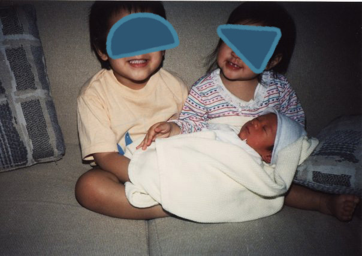
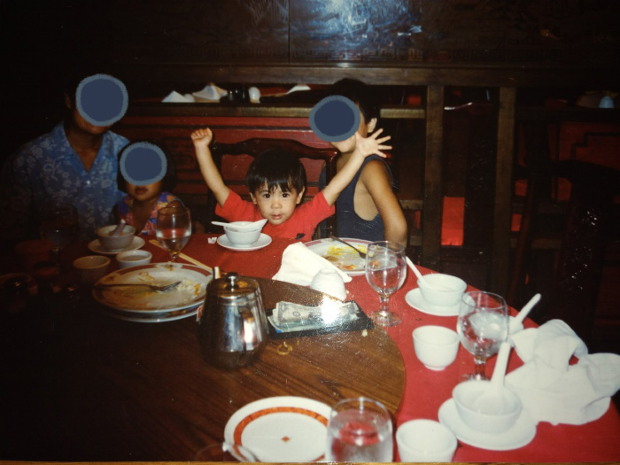
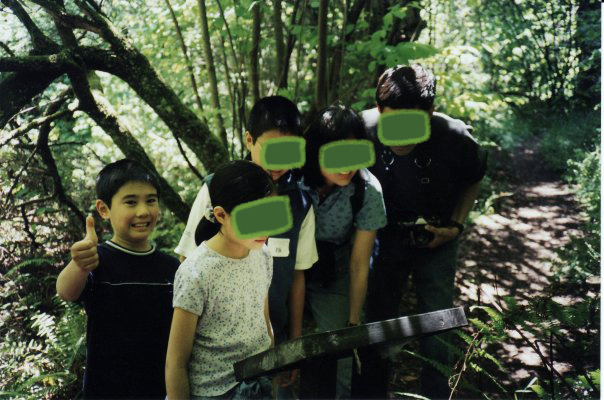

Chapter 7: Imaging, Imagining
Child Star
- ---o-oOo-o--- -



A camera is a tool for enjoying life. When a camera shows up, I like to acknowledge it, because to please a camera is to please my future self, my future friends and family. I run up to the camcorder and stick my face in it--how funny is that gonna be?! I am special and loved and I always will be.